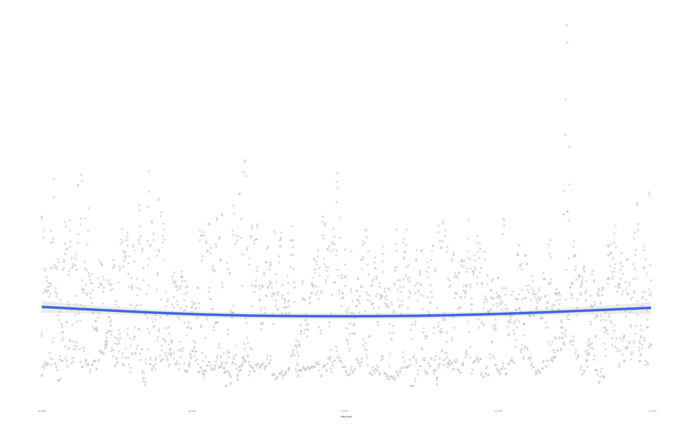

tidypollute: Making of the Hex Logo!
Dr. Nelson Roque
hexsticker.RmdGetting Started with tidypollute
Goals of this Notebook
# >>>>>>>>>>>>>>>>>>>>>>>>>>>>>>>>>>>>>>>>>>>>>>>>>>>>>>>>>>>>>>>>>>>>>>>>>>>>>>
# Load necessary libraries
library(hexSticker)
library(ggplot2)
library(showtext)
library(dplyr)
library(lubridate)
library(tidypollute) # Assuming this is your package
# >>>>>>>>>>>>>>>>>>>>>>>>>>>>>>>>>>>>>>>>>>>>>>>>>>>>>>>>>>>>>>>>>>>>>>>>>>>>>>
## Load Google Fonts (for a handwritten, natural style)
font_add_google("IBM Plex Sans", "specialelite")
#font_add_google("Zilla Slab", "specialelite")
#font_add_google("Special Elite", "specialelite")
showtext_auto() # Enable text rendering for the sticker
# Get EPA air pollution data ----
df_1991_co <- tidypollute::epa_airdata_links %>%
filter(year == 1991, unit_of_analysis == "daily", analyte == "42101") %>%
tidypollute::download_stack_epa_airdata(urls = ., download = TRUE, stack = TRUE, output_dir = "data/")
# Filter for Tampa, Florida -----
df_1991_co_filt <- df_1991_co %>%
filter(state_name == "Florida", city_name == "Tampa") %>%
mutate(dt_wday = wday(date_local, label = TRUE))## # A tibble: 6 × 2
## date_local n
## <date> <int>
## 1 1991-01-01 6
## 2 1991-01-02 6
## 3 1991-01-03 6
## 4 1991-01-04 6
## 5 1991-01-05 6
## 6 1991-01-06 6
# Create the ggplot visualization ------
p <- ggplot(df_1991_co_filt, aes(x = date_local, y = arithmetic_mean)) +
geom_jitter(size = 0.2, alpha = 0.4, color="#C0C0C0") + # Smoky gray for pollution particulates
geom_smooth(color = "royalblue", alpha = 0.2, size = 0.9) +
theme_minimal(base_family = "specialelite") + # Use Google font
theme(
axis.text.y = element_blank(),
axis.title.y = element_blank(),
plot.background = element_rect(fill = "transparent", color = NA),
panel.background = element_rect(fill = "transparent", color = NA),
panel.grid.major = element_blank(),
panel.grid.minor = element_blank()
)
p
# Generate the hex sticker ------
sticker(
subplot = p,
h_fill = "white", # Dark gray smog background
h_color = "royalblue", # Industrial brown border
package = "tidypollute",
p_color = "royalblue", # Muted yellow text (air quality warnings)
p_family = "specialelite",
p_size = 20, # Adjust text size
p_y = 1.25, # Adjust text height position
s_x = 1,
s_y = 0.85, # Scale and position the plot
s_width = 1.3,
s_height = 0.95,
filename = "../man/figures/logo.png"
)Summary
I always wanted to know to programmatically make hex logos for my R
packages. This notebook shows how to make a hex logo for the
tidypollute package. The logo is based on air pollution
data from the EPA for Tampa, Florida in 1991, where the package author
was born.
The logo is a visualization of the daily average CO levels in Tampa
for 1991. The logo is a hex sticker that can be used for the
tidypollute package.